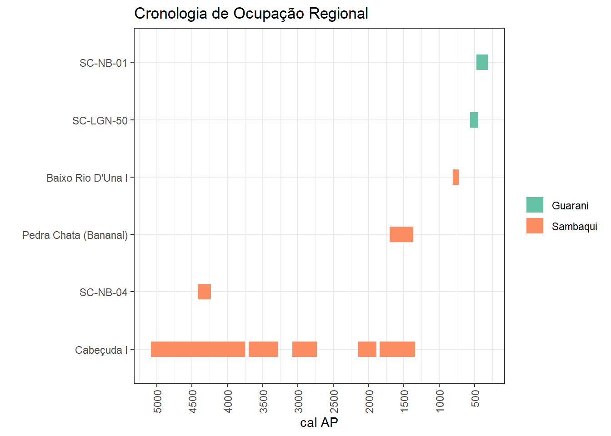

Nesta seção apresentamos as informações cronológicas da área de pesquisa trabalhada na tese. Essas datas foram coletadas a partir de levantamentos bibliográficos descritos no texto e se baseiam e expandem o importante trabalho realizado por Merencio (2021), incluindo novas datas para o sambaqui Roça Grande II.
As informações de calibração são decorrentes do trabalho de Merencio (2021), produzidas no software OxCal 4.3.1 e utiliza os seguintes parâmetros para cada um dos tipos de material:
Carvão: ShCal 13
Conchas da Região Lagunar: Marine 13, ΔR 220±20 (Eastoe, 2002)
Conchas Região Costeira: Marine 13, ΔR 33±24 (Angulo, 2005)
Ossos Humanos: Mixed Curve (50% ShCal13 50% Marine13), ΔR 220±20 (Eastoe, 2002)
TL (2 sigma): Cal Mx= (t0-Dc)-(2*Dp) / Cal Mn= (t0-Dc)+(2*Dp), onde t0 é o ano de obtenção da datação, Dc é a data central e Dp é o desvio padrão da data central (Lanos & Phillippe, 2015; English Heritage, 2008). Para converter a data calendário em anos AP é preciso subtrair 1950 (BC) ou somar 1950 (AD)
Obs: As datações realizadas antes de 1970 necessitam de uma correção de correção 13C. Para estas datas é realizado o seguinte cálculo: (σ13C * Eδ13C)+ σDM, onde “σ 13C é desvio do C13 medido na amostra em relação ao valor convencional médio; Eδ13C corresponde ao espectro total de flutuação do δ13C medido; e σDM corresponde ao desvio padrão em anos da data medida.” No caso da ausência dos primeiros dados, utiliza-se os valores máximos: σ13C=16,4; e Eδ13C=8 (Gilson & Lessa, 2020).
Sobre as datações também é importante destacar que algumas delas não possuem a informação da sua datação absoluta e/ou código do laboratório. Esses problemas são oriundos da publicação dos dados que não incluíram estas informações essenciais no texto original. Contudo, devido à escassez de informações cronológicas regionais, não podemos dispensar essas datas de nosso banco de dados, pois mesmo com alguns problemas elas nos permitem construir uma cronologia regional.
O download da tabela de datação em formato .csv pode ser feito aqui.
A tabela abaixo apresenta as datações disponíveis para os sítios da área de pesquisa.
O gráfico abaixo apresenta a cronologia de parte dos sítios na área de pesquisa, produzida a partir do banco de dados cronológicos. Foram feitas distinções entre tipos de sítio para explicitar os diferentes momentos de ocupação humana na região. As datas obtidas através do método de Termoluminescência, devido à calibração e também na origem de algumas das datas (Termoluminescência).
## Warning: Using `size` aesthetic for lines was
## deprecated in ggplot2 3.4.0.
## ℹ Please use `linewidth` instead.